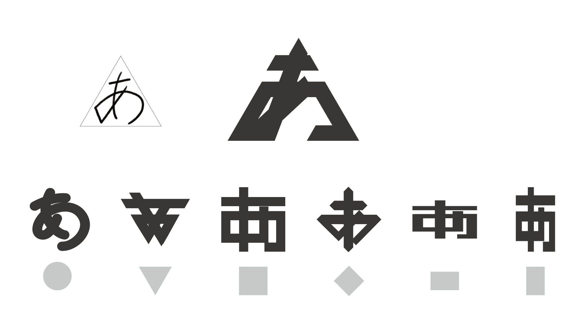

かたちがな
かたちがな
外形の影響に基づくひらがなのタイプフェイス
ひらがなには「外形」と呼ばれる文字全体を囲む輪郭が存在する。
外形を意識して文字を書くことで、字形の安定や均整をもたらし、美しさや視認性が
向上するとされている。
ひらがなの外形は円形、三角形、逆三角形、正方形、ひし形、横長、縦長の全7種類に
分類することができる。
本来美しく文字を書くための指標である外形に着目し、その形態的特徴を極端に強調した
「かたちがな」という新たなひらがなのタイプフェイスを制作した。
7種類のかたちがな


